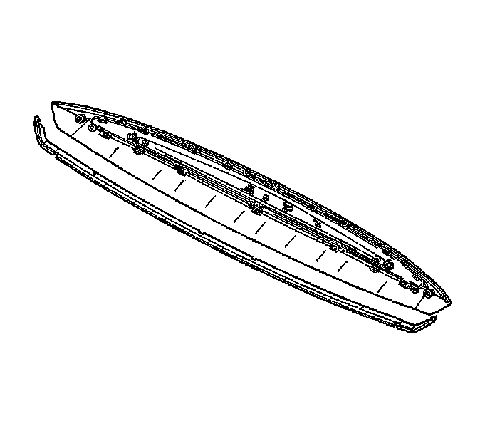

Center Mounted Brake Lamp: Service and Repair
High Mount Stop Lamp Replacement
Removal Procedure
1. Remove the liftgate. Refer to Liftgate Replacement (Service and Repair) .
2. Remove the fasteners securing the high mounted stop lamp to the liftgate.
3. Separate the rear edge weatherstrip of the bezel from the liftgate. Use a plastic flat-bladed tool to release the adhesive strip from the liftgate.
4. Disconnect the high mounted stop lamp electrical connector from the wiring harness.
5. Separate the front edge weatherstrip from the bezel. Use a plastic flat-bladed tool to release the adhesive strip from the bezel.

6. Remove the fasteners securing the high mounted stop lamp to the bezel.
7. Remove the high mounted stop lamp from the bezel.
Installation Procedure
1. Clean any tape residue from the liftgate and the high mounted stop lamp bezel with a 50/50 mixture by volume of isopropyl alcohol and water.
2. Use a clean lint-free cloth to wipe dry the liftgate, the high mounted stop lamp, and the bezel.
3. Install the high mounted stop lamp to the bezel.
Notice: Refer to Fastener Notice (Fastener Notice) .
4. Install the fasteners that secure the high mounted stop lamp to the bezel.
Tighten the high mounted stop lamp fasteners to 2 N.m (18 lb in).
5. Peel back the protective cover to expose the bezel side adhesive tape edge of the new rear edge weatherstrip.
6. Position the notches on the new rear edge weatherstrip to the high mounted stop lamp bezel.
7. Press the new rear edge weatherstrip onto the high mounted stop lamp bezel.
8. Connect the high mounted stop lamp electrical connector to the wiring harness connector.
9. Peel back the protective cover to expose the liftgate side adhesive tape edge of the new rear edge weatherstrip on the high mounted stop lamp bezel.
10. Position the high mounted stop lamp bezel to the liftgate.
11. Press the rear edge of the high mounted stop lamp bezel onto the liftgate.
12. Install the fasteners securing the high mounted stop lamp bezel to the liftgate.
Tighten the bezel fasteners to 3 N.m (27 lb in).
13. Install the liftgate. Refer to Liftgate Replacement (Service and Repair) .
14. Use a small flat-bladed tool to work the upper window seal out from under the high mounted stop lamp bezel.